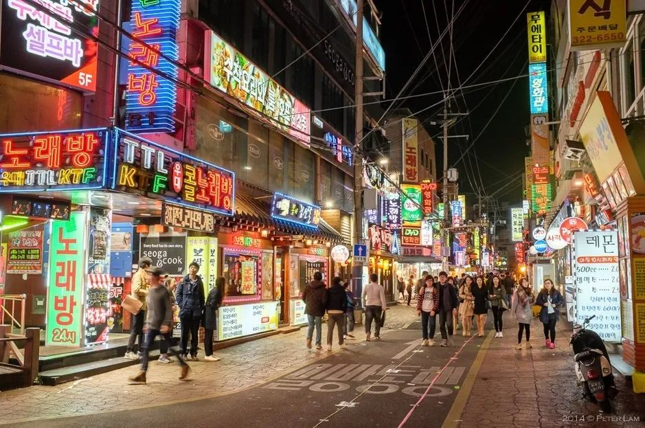
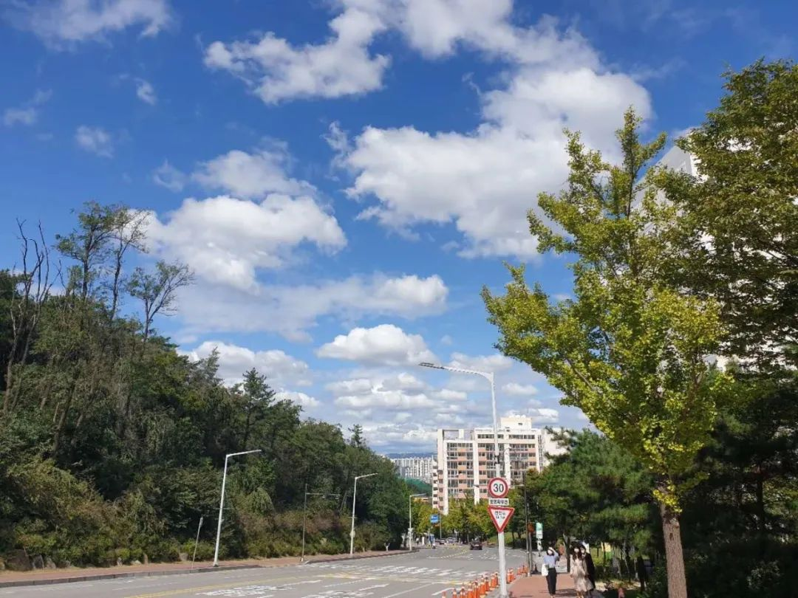

收录于合集 #留学纪实 4个

我与韩国结缘始于大学时期，我本科就读于山东大学威海校区东北亚学院（原韩国学院）。在全中国离韩国最近的城市—威海生活的四年期间，原本对韩国一无所知的我对这个人口数只有山东省人口一半的国家的语言、文化和政治等逐渐产生了兴趣。在本科毕业后，我如愿被首尔大学国际地域学 (International Area Studies)专业录取，如今在这里度过了两年多的硕士生涯。作为一个留韩资历和时间都尚浅的留学生，我将着重分享从我的角度看到的韩国以及我在首尔大学期间的学习和课余生活。
文章简介
【本期作者】 李思；本科就读于山东大学的韩语专业；硕士就读于韩国国立首尔大学的国际地域学专业
【排版】 谭誉豪
【美编 】黄竹音
一、我眼中的韩国
我在大学时期对韩国的印象和大部分人一样停留在韩流、时尚和泡菜等关键词上。记得本科三年级来韩国交换的时候，走出仁川机场的一刻，看到的就是和韩剧里差不多的一群妆发精致的男男女女。地铁里和街道上的香水味，爬不完的山坡，密集的楼群和狭窄的街道就是我对韩国的初印象。自两年前一直到现在，我所有的学习和娱乐生活都围绕着首尔大学和学校周边进行。首尔是韩国的政治、文化和经济中心，是一个人口和产业密集，公共交通等基础设施非常完好的城市，可以说绝大部分的韩国最优质的年轻人都会选择在首尔寻找发展的机会。一开始让我印象最深刻的是韩国人的守序和友善。在首尔的地铁里，粉红色的孕妇专座和老人专座划分明确，而且无论再拥挤，绝大部分情况下，大家都会依旧把座位空出来，预备留给更需要的人。地铁站里随处可见的育婴室和残疾人服务中心也体现了韩国的人文关怀。并且，韩国是个非常注重礼仪的国家，上下老幼等级分明。无论在校内还是校外，遇到年龄更大或职位更高的人的时候，韩国人会严格遵守礼仪，语言上要讲敬语，行动上要不时弯腰拱手表示敬意。作为接触韩国文化长达6年的我，也逐渐入乡随俗，真心认可并尊重这种礼仪文化。

首尔街道 图片来源：https://peterlamphotography.com/2014/04/24/seoul-street-scenes/
二、韩国人眼中的中国
韩国人对中国人普遍很礼貌友善。根据我个人的观察，随着中国经济发展，中韩关系变得愈加紧密，在经济，政治和人文方面等交流愈加频繁，韩国人对中国人的印象也逐渐提高。虽然依旧不乏一些年长的保守派对中国的印象还停留在几十年前，当作和朝鲜一样看待，但是绝大部分的年轻人们接受信息的渠道广泛，随着中国的综合国力提高，韩国人对与中国的兴趣日增，对于中国和中国人的认识的隔阂也在日益缩小。很多韩国人都表示，中文是除英语以外最想学也是最重要的外语。去中国留学也逐渐成为很多韩国高中生的第一选择。另外，最近几年，在韩国涌现出越来越多的中餐厅，尤其在韩国年轻人群体中很受欢迎。在韩国，常常会走进一家麻辣烫店，发现大部分客人都是韩国人的有趣场面。
虽然大部分韩国人和其他外国人对中国人很尊重，对中国的一些事情也非常感兴趣，但是也会有因为对彼此了解不够充分而让人啼笑皆非的时候。这也说明了，两国间的文化差异和刻板印象依旧没有完全消除。在我所学习的国际政治领域，上课的时候，大部分主题都会或多或少涉及到中国，教授们和其他同学们在讨论时很愿意了解中国学生的看法。虽然有时依旧存在误解和偏见，但是讨论下来，还是可以感受到他们的理解和尊重。
三、 在冠岳山上敲钟的生活
我所就读的首尔大学位于首尔市的冠岳区，一个人烟稀少，远离嘈杂的校区。由于学校坐落在整个冠岳山，校园面积很大，需要校车出行。可能由于远离闹市区的纷杂，也可能是因为这里聚集了全韩国最爱学习的年轻人，首尔大学的学术氛围非常浓厚。尤其在当下的秋季，走在校园里常常会感觉到一种静穆和肃杀的气氛。校园里的大部分人衣着整洁简朴，背着包快步疾行。首尔大学治学严谨，教授们非常严格，学生们大多非常勤奋。虽然校园里少见欢声笑语，但作为一个专注做学术搞科研的地方，这里算得上是一个远离纷扰的清静所在。

首尔大学校园 图片来源：笔者自摄
1. 学习生活
我所在的专业国际氛围很浓厚，中国学生人数比例占很小一部分，其余由韩国和来自欧洲、美国、非洲等其他国家学生组成。专业的课程设置提供很多国际学生间课上互相交流的机会。课上氛围轻松自由，课下学生与教授沟通的机会也很多。除了课上和教授同学们的交流外，学校里也会请到很多学界的大师们来举办很多讲座和论坛等活动供学生自由参加。另外，学院内还有学生组织的按国别和区域划分的圆桌研讨会（中国，美国，非洲和东盟等），学生可以根据自己的时间自由选择参加，在每周定期的午餐时间讨论关于该地区所感兴趣的话题。另外，学校的教学资源丰富，图书和期刊等电子资源渠道广泛，获取最新学术资源非常便捷。校内的各学院和研究所会定期举行公开讲座，提供给学生包括在学术论文写作、外文期刊检索、给外国学生韩语和英语写作指导等支持。总之，只要有心学习，在这里可以获取一切所需要的资源。
2. 奖学金和勤工助学
韩国学校在奖学金的提供上也很大方，很多学校会有外国学生专项奖学金。校内也会提供给学生很多助教和行政室的勤工助学岗位。另外，很多校外的财团或毕业的校友也会设有奖学金，大部分情况下，是面对所有学生开放申请的。在我的学校里，开放给外国人的奖学金有很多，例如韩国政府奖学金（涵盖所有学费、生活费、论文打印费和交通费等）、财团奖学金（不同财团金额不同，但韩国大部分财团都很“壕”）、学校开设的奖学金(按绩点高低分发，包括全奖和半奖不等)。另外，校园里开放给学生勤工助学的岗位也很多，每月工作时长40～80小时不等，时薪1万韩币左右。总之，韩国的学校给学生的财政支持很充足，在校内工作既可以赚到生活费，也可以丰富自己的经历。这种实践也是深入了解韩国文化，融入韩国社会的好机会。只要愿意把握，努力争取，拿奖学金的机会是很多的。
3. 社交和课余活动
在韩国留学期间，社交也是必不可少的一部分。韩国大学大多会给学生提供很多参加社交活动的机会。除了各种社团外，每个学院也会分别举办自己的社交活动，帮助学生间增加交流。例如，每个韩国大学在新学期开始时必不可少的欢迎会（Orientation）和MT(Membership training)，一般是刚入学的新生们和部分老生们一起组织的两天一夜的短期旅行。虽然最后都会以通宵喝酒聊天作为结尾，但是过程中新生们在一起通过聊天和做游戏等活动，可以很快认识新朋友，向前辈请教学习和生活等经验，这样的活动有助于新生们快速融入新集体，以愉悦的心情开始留学生活。另外，韩国学校的学生会活动丰富，比如，学期中会定期举办Major Night，帮助同专业的同学们互相认识，交流学习和生活上的经验。学期末会举办芝士&红酒聚会，大家一起喝酒聊天，释放期末考试的压力。除此之外，每个学校不同专业还会有自己特色的活动供学生自由选择参加。
除了学校举办的活动之外，在韩国可以享受的课余的娱乐活动也很多。由于由于首尔这个城市的街道比较安全，而且韩国人很喜欢夜生活和喝酒，所以首尔的街头即使在夜晚12点，街道上的饭店和酒屋依旧灯火通明。在韩国，有一个特别的文化叫火热的周五（불금），在每个周五的晚上，为了卸下一周的疲惫，为下一周积蓄能量，这个时候就是韩国学生们愉快地玩耍，尽情释放压力的时间。因此，特别在每个周五的晚上，可以在大学路周边看到很多精心打扮的大学生们出来和朋友聚会喝酒、看音乐剧、看展览或电影等热闹场面。
除此之外，在校外活动中，在韩国的中国留学生可以自由参加在中国驻韩大使馆教育处指导下的全韩中国学人学者联谊会组织和各大学的中国留学生联谊会组织的各种学术和娱乐活动。另外，韩国国际交流财团（Korea Foundation）等韩国的财团或学会也会定期举办促进中韩两国交流的论坛等活动。参加这样的活动有助于深入了解韩国，而且和前辈交流留学经验心得，也是学习之余交友放松的好机会。
四、总结
中韩关系在萨德事件之后的发展虽稍有停滞，但近几年又逐渐回暖。中韩两国在经济、人文等领域依旧联系紧密。作为一个在硕士阶段来到韩国留学的我来说，在韩国留学的不长不短的近3年的时间里，我感受到的韩国是一个小且精致并充满尊重和人情味的国家，我感受到的首尔大学虽有点不食人间烟火的感觉，但是一个治学严谨，能为有理想和抱负的年轻人们提供一切顶尖学习资源的地方。韩国这个国家虽小，但却相对包容和开放。中国的学生在韩国学习期间，只要认真学习，愿意真正融入感受他们的文化，保持健康积极的心态，一定可以得到很宝贵的收获。
往期精彩
【留学纪实】从高中到博士：留学美国七年的感想与思考 | 第03期
**
**
**
**
**
**
添加 “国小政”微信
获取最新资讯


国政学人
支持学术公益与知识传播
微信扫一扫赞赏作者 __赞赏
已喜欢，对作者说句悄悄话
取消 __
发送给作者
发送
最多40字，当前共字
上一页 1/3 下一页
长按二维码向我转账
支持学术公益与知识传播
受苹果公司新规定影响，微信 iOS 版的赞赏功能被关闭，可通过二维码转账支持公众号。